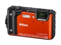

器材库 > 不可换镜头数码相机 > COOLPIX W300

规格总览
发布日期
2017-05-31
防水
是
影像规格
影像传感器
CMOS
影像传感器尺寸
1/2.3英寸
总像素
1679万
有效像素
1600万
静态图像格式
JPEG
静态图像尺寸
4608×3456, 3264×2448, 2272×1704, 1600×1200, 640×480, [16:9] 4608×2592, [1:1] 3456×3456
短片格式
MP4
短片尺寸
2160/30p/25p, 1080/30p/25p/60p/50p, 720/30p/25p, 480/30p/25p, HS 480/4倍, HS 1080/0.5倍
音频格式
AAC 立体声
防抖系统
镜头位移和电子减震
镜头和对焦
镜头结构
12片/10组
低/超低色散镜片
2片
焦距
4.3mm-21.5mm
等效35mm画幅焦距
24mm-120mm
最大光圈
f/2.8-4.9
光学变焦
5倍
数码变焦
4倍
最近对焦距离
50cm, 微距1cm
自动对焦系统
对比侦测AF
曝光控制
测光模式
中央重点测光, 点测光, 矩阵测光
曝光模式
程序自动曝光
快门速度
1/1500 - 1秒1/4000秒（高速连拍期间可达到的速度）25秒（多重曝光亮化场景模式下的星星的轨迹）
曝光补偿
±2EV以1/3EV级调整
ISO感光度
ISO 125-1600ISO 3200、6400（使用自动模式时可用）
自拍
10秒、2秒5秒（人像自拍定时器）
闪光灯
内置闪光灯
固定
闪光涵盖范围
广角端：0.5 - 5.2 m长焦端：0.5 - 4.5 m
取景规格
LCD类型
彩色TFT LCD
LCD尺寸
3.0英寸
LCD像素
92.1万
视野率
拍摄模式：97%播放模式：100%
亮度调节级数
5
文件输入/输出
内置存储容量
约99MB
存储卡
SD/SDHC, SDXC
数据接口
微型USB
视频/音频接口
D型HDMI接口
无线功能
Wi-Fi, 蓝牙
支持打印协议
PictBridge
电源
电池
锂离子充电电池 EN-EL12
续航能力
静态图像：可拍摄约280张视频：可拍摄约1小时
外观
颜色
黑色, 黄色, 橙色, 迷彩
尺寸
111.5×66.0×29.0mm
重量
含电池和存储卡约 231g
其它
GPS
有
工作温度
-10 ~ 40℃
工作湿度
85%
备注
指南针：16个方位基点（采用3轴加速度传感器的位置校正，偏离角自动校正，以及自动偏移调整）内置LED灯
该产品暂无存档的网友点评
产品图 / 样片
COOLPIX W300
评测 / 相关文章
- 详细内容 （存档）